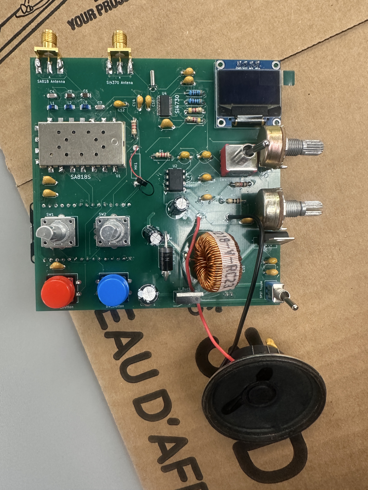

← Back to Home
RF Walkie-Talkie + FM Radio System

Overview
Custom PCB-based RF communication project integrating walkie-talkie
functionality and FM radio reception.
Key Features
- SA818 transceiver module
- SI4730 FM receiver
- OLED display
- Audio output
- Power regulation circuitry
- Custom PCB assembly and debugging
Engineering Challenges
- RF debugging
- Clock oscillator issues
- Grounding and PCB layout considerations
- Battery current limitations
Results
Successfully transmitted and received voice signals and demonstrated
FM radio functionality.